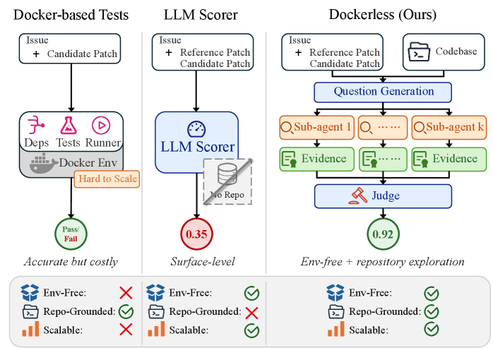
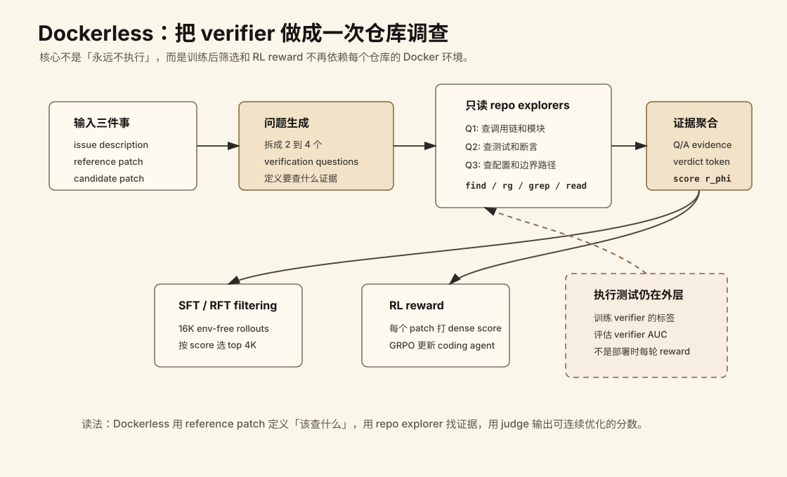
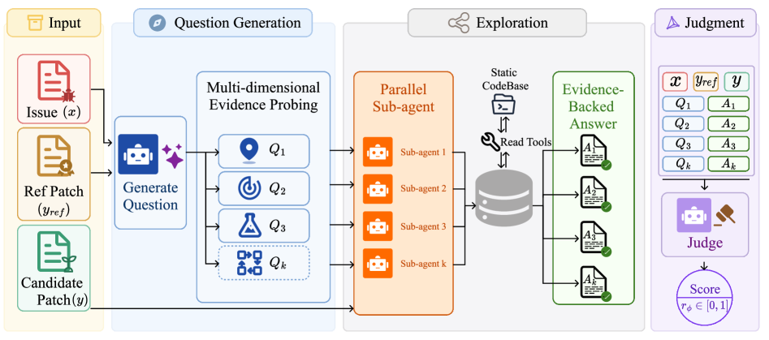
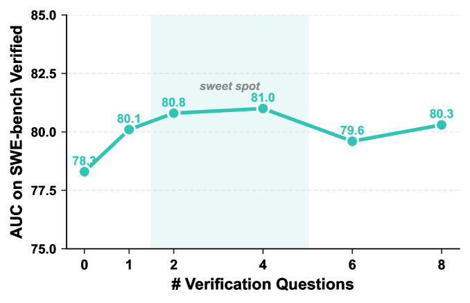
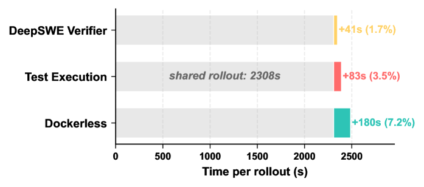

Dockerless: 无需执行环境的编码智能体验证器
- Paper: Dockerless: Environment-Free Program Verifier for Coding Agents
- arXiv: 2606.28436
- 机构: Shanghai Jiao Tong University, Douyin Group
- 类型: SWE agent verifier / post-training pipeline / system + method paper
- 关键词: coding agent, patch verifier, environment-free training, SFT filtering, RL reward
读法：给人和 agent 的路标
这篇先抓一句话：Dockerless 不是取消执行测试，而是把训练后筛选和 RL reward 里最麻烦的 per-repository Docker 执行，换成一个会读仓库、会收集证据的 verifier。 如果只想快速理解，读“一句话判断”、下面这张流程图、Table 2/3/1 的三层证据，再看“需要警惕的地方”。
给 agent 以后检索时，关键词是：repo-grounded verifier、verification questions、read-only explorer、dense reward、SFT filtering、GRPO reward、execution labels remain external。这篇最适合放在“coding agent 后训练 / verifier / 环境替代”这条线里，而不是放在普通 LLM judge 里。
一句话判断
Dockerless 的核心贡献不是简单地说“不要 Docker”，而是把程序验证器从一个静态 LLM judge 变成一个会主动读仓库、分解验证问题、并行收集证据、再给 patch 打分的 agentic verifier；它让 SWE agent 的 SFT 筛选和 RL reward 可以少依赖 per-repository test execution，但并没有完全摆脱执行信号，因为 verifier 的训练和评测标签仍来自执行测试。
图表优先读法
| 先看 | 图/表 | 读完应该抓住什么 |
|---|---|---|
| 1 | Figure 1 / Figure 2 | Dockerless 的位置：比 LLM judge 更 repo-grounded，比 Docker execution 更便宜 |
| 2 | Table 2 | 它作为 verifier 本身是否比 frontier LLM judge 强 |
| 3 | Figure 5 | verification questions 有用，但 2-4 个是 sweet spot |
| 4 | Table 3 / Table 1 | verifier 分数能不能变成 SFT filtering 和 RL reward 的真实收益 |
| 5 | Figure 6 | 省 Docker 之后是不是把成本转移到 verifier 上 |
先抓住四个点
- 它解决的是训练瓶颈，不是部署时写代码本身。 编码智能体后训练需要知道哪些 rollout 真修好了 issue。传统做法是每个仓库搭 Docker、装依赖、跑测试，工程成本很高。
- 真正创新点是 repo-grounded verification。 Dockerless 不只看 issue、reference patch、candidate patch 的文本相似度，而是生成 2-4 个 verification questions，让子智能体用只读工具去仓库里找证据。
- 证据链比口号硬。 verifier AUC、SFT filtering、RL reward 三层实验都做了；Dockerless-RL-9B 在 SWE-bench Verified / Multilingual / Pro 上达到 62.0 / 50.0 / 35.2，接近 Test-Execution RL 的 62.4 / 51.3 / 35.7。
- 边界也很清楚。 对 Rust/C 这类依赖编译诊断的语言，env-based SFT 仍明显占优；Dockerless 更像强 verifier/filter，不是完整 execution oracle。
问题背景
训练 coding agent 时，verifier 至少出现在两个关键位置：
- SFT / RFT 数据筛选：从大量 rollouts 里挑出真正解决 issue 的轨迹。
- RL reward：给每个 rollout 的 final patch 打分，作为 GRPO 等算法的奖励。
传统 gold signal 是 execution-based verification：把 candidate patch 放进仓库专属 Docker 环境，跑 held-out tests，然后得到 pass/fail。它的优势是信号强，问题是成本也很硬：
- 每个仓库需要定制 Docker image、依赖、测试选择、runner 和结果解析。
- 很多私有、企业、遗留仓库没有可复现环境或完整测试。
- 即使 rollout 可以在 minimal base image 里收集，verifier 仍然会卡在 per-repo execution 上。
这篇论文的切口就是：如果 rollout 已经可以 env-free 地收集，能不能把 verifier 也做成 env-free？更准确地说，是让 训练时的过滤和 RL reward env-free，而不是把所有执行信号从世界上抹掉。

这张官方 Figure 1 把定位讲得很清楚：Docker-based tests 准但需要每个仓库的执行环境；LLM scorer 便宜但只看表面文本；Dockerless 的中间路线是让 verifier 主动读仓库，从 evidence 而不是 surface similarity 下判断。
先看我整理的流程图

这张图的读法是：Dockerless 先拿到 issue、reference patch、candidate patch；再把“这个 patch 对不对”拆成 2 到 4 个可查证的问题；每个问题交给只读 repo explorer 去仓库里找证据；最后 judge 聚合 Q/A evidence，输出可以用于 SFT filtering 或 RL reward 的 dense score。
图里有三个锚点：
- reference patch 不是拿来做相似度匹配：它更像“答案解析”，帮助 verifier 知道应该检查哪些语义条件。
- repo explorer 是信息增量：普通 LLM judge 只看文本，Dockerless 会主动查调用链、测试、配置和相关文件。
- 执行测试仍在外层：训练 verifier 和评估 verifier 仍需要 execution labels；Dockerless 省的是每个训练 rollout 都跑 per-repo Docker 的成本。
方法 Pipeline
Dockerless 的输入是三样东西：

- issue description
x - reference patch
y_ref - candidate patch
y
输出是一个连续分数 r_phi(x, y) in [0, 1]，表示 candidate patch 是否解决 issue。
Stage 1: 生成验证问题
模型先根据 issue 和 reference patch 生成若干 verification questions。论文里 inference 时通常生成 2-4 个问题。这些问题不是泛泛地问“这个 patch 对不对”，而是把正确性拆成可查证的维度：
- 修复应该作用在仓库的哪个模块或调用链上？
- 修改后的行为应该是什么？
- 哪些测试、断言、配置或调用点能证明它是对的？
- 这个修改会不会破坏其他路径？
这一步的意义是把“判断 patch 是否正确”变成几个可探索的 repo-grounded 子问题。
Stage 2: 并行仓库探索
每个问题交给一个 sub-agent。sub-agent 只使用 read-only shell tools，例如 find、grep、rg，在仓库中找相关文件、调用关系、测试、配置和文档，最后返回一个 evidence-backed answer。
这里和普通 LLM-as-judge 的差别很关键：
| Verifier | 看仓库吗 | 怎么判断 | 主要风险 |
|---|---|---|---|
| 文本相似度 / 普通 LLM judge | 否 | 看 issue、golden patch、generated patch 的表层匹配 | 功能等价但写法不同会被低估 |
| Docker-based tests | 是 | 在 per-repo Docker 里跑 held-out tests | 准但环境成本高 |
| Dockerless | 是 | 子智能体读仓库、收集证据，再聚合判断 | 静态/半静态证据可能漏掉运行时问题 |
Stage 3: 证据聚合与打分
最后的 judge 看到完整上下文：x、y_ref、y，以及所有 (Q_k, A_k) 证据对。它输出二分类 verdict token：0 表示没解决，1 表示解决。
推理时并不只拿 hard label，而是读取 token 0 和 1 的 logits，用 softmax 得到 dense score：
r_phi(x, y) = exp(l_1) / (exp(l_0) + exp(l_1))
这个连续分数就可以用于：
- SFT/RFT 阶段按分数筛 top-K rollouts
- RL 阶段作为 reward
Verifier 怎么训练
Dockerless 的训练不是纯自监督，也不是凭空学会验证。它仍然依赖 execution-labeled candidate patches：
- 每个训练样本是
(x, y_ref, y, r*)，其中r*是通过 held-out unit tests 得到的执行标签。 - 使用 teacher model 生成完整的 question-answer-judge trajectory。
- 如果 teacher 最后的 verdict
r_hat和执行标签r*一致，就保留这条轨迹；否则丢弃。 - 对负正样本比例做 4:1 cap，缓解类别不平衡。
- 用保留下来的 trajectories 对一个共享 backbone 做 next-token cross-entropy 训练。
几个实现细节值得记：
- 训练语料来自 SWE-Gym 和 Multi-SWE-RL，覆盖 3.7K unique issues。
- teacher model 是 GLM-5。
- verifier backbone 使用 Qwen3.5-9B。
- question generation、sub-agent exploration、final judgment 共享同一个 backbone。
- candidate patch 和 Q&A context 输入会被截断到 10,000 characters。
- 训练最大 sequence length 是 32,768。
所以这篇的“environment-free”要精确理解：post-training rollout、SFT filtering、RL reward 可以不跑 per-repo Docker；但 verifier 的训练数据仍然来自执行标签。
后训练 Pipeline
有了 Dockerless，论文把它接到两个后训练环节。
Env-free RFT / SFT filtering
流程是：
- 在 minimal Linux image 中收集 env-free rollouts，不启动 per-repository Docker。
- 得到 16K candidate rollouts。
- 用 Dockerless 对每个 final patch 打分。
- 选全局 top 4K rollouts 作为 SFT 数据。
- 从 Qwen3.5-9B 初始化，做标准 SFT。
这里的核心 claim 是：raw env-free rollout 不一定好，关键是要有强 verifier 做过滤。
Env-free RL reward
RL 阶段从 Dockerless-SFT-9B 出发：
- 每个 issue 采样一组
G=8rollouts。 - 每个 rollout 的 final patch 用 Dockerless 打分。
- 每个 reward 用
M=2次 independent Dockerless passes 的平均值，失败 pass 会被丢弃。 - 用 group-normalized advantages 跑 GRPO。
- RL 训练共 50 steps，过程中不跑 per-repository test execution。
这里值得注意：Dockerless 不只是一个 offline data filter，也被当作 online-ish reward model 用进 RL。
实验结果
1. Verifier 本身强不强
论文构造了一个 balanced trajectory-level verifier benchmark，共 776 samples：
- 500 from SWE-bench Verified
- 276 from Multi-SWE-bench Flash
- 每个 split 内正负样本平衡
- label 来自 per-repository Docker + held-out tests
Table 2 的核心结果：
| Verifier | SWE-bench Verified AUC | Multi-SWE AUC |
|---|---|---|
| DeepSeek-V3.2 judge | 69.4 | 58.5 |
| Kimi-K2.5 judge | 70.7 | 63.9 |
| GLM-5 judge | 73.2 | 62.5 |
| GPT-5.4 judge | 75.9 | 59.5 |
| DeepSWE Verifier | 66.7 | 62.9 |
| Dockerless | 81.0 | 72.1 |
这个表是整篇最重要的证据之一。Dockerless 相比最强 open-source verifier 提升 +14.3 / +9.2 AUC points；相比最强 frontier LLM judge 也提升 +5.1 / +8.2。这说明收益不是简单来自“模型更强”，而是来自 repo exploration + rejection-sampled trajectory training 这个 workflow。
这张表也解释了为什么 Dockerless 不是“prompt 一个更强 judge”。如果只换更强模型，zero-shot frontier judge 应该已经接近上限；但结果显示，能进仓库查证据的 verifier 明显更稳。
2. 问题数量 K 是否真的有用
Figure 5 做了一个很好的 ablation：

| # Verification Questions | AUC on SWE-bench Verified |
|---|---|
| 0 | 78.3 |
| 1 | 80.1 |
| 2 | 80.8 |
| 4 | 81.0 |
| 6 | 79.6 |
| 8 | 80.3 |
读法很直接：问问题和收集证据确实有帮助，但不是越多越好。2-4 个问题是 sweet spot；更多问题可能带来冗余或噪声。
3. SFT filtering 是否有效
Table 3 固定 Qwen3.5-9B backbone 和 SFT recipe，只改变训练数据来源：
| SFT Data | Verified | Multilingual | Pro |
|---|---|---|---|
| None / base | 59.6 | 41.3 | 32.3 |
| All 16K env-free | 58.8 | 41.3 | 31.9 |
| Random 4K | 58.2 | 44.3 | 32.0 |
| Env-based 4K | 60.0 | 48.3 | 33.9 |
| Dockerless 4K | 60.6 | 47.7 | 35.3 |
这个结果比“最终分数高”更有信息量：
- All 16K 不如 base，说明 env-free rollouts 里噪声不小。
- Random 4K 不稳，说明不是少训一点就好。
- Dockerless 4K 接近 Env-based 4K，说明 verifier 提供了有效选择信号。
4. RL reward 是否接近 test execution
Table 1 对比了不同 RL reward source：
| Model / Training | Env-free training stage | Verified | Multilingual | Pro |
|---|---|---|---|---|
| Qwen3.5-9B base | - | 59.6 | 41.3 | 32.3 |
| Dockerless-SFT-9B | Yes | 60.6 | 47.7 | 35.3 |
| + DeepSWE-Verifier RL | Yes | 60.6 | 47.3 | 34.1 |
| + Test-Execution RL | No | 62.4 | 51.3 | 35.7 |
| Dockerless-RL-9B | Yes | 62.0 | 50.0 | 35.2 |
Dockerless-RL-9B 几乎追上 Test-Execution RL，同时明显超过 DeepSWE-Verifier RL。论文想证明的不是 Dockerless 比真实测试更准，而是：在训练阶段，用 Dockerless 做 reward 已经足够接近 test-execution reward，且省掉了 per-repo Docker setup。
5. 成本是否真的可接受
Dockerless 会派 sub-agents 探索仓库，所以 reward computation 比普通 verifier 更慢。Figure 6 给的 per-rollout wall-clock breakdown 是：

| Reward source | 额外 reward time | 占总 per-rollout time |
|---|---|---|
| DeepSWE Verifier | +41s | 1.7% |
| Test Execution | +83s | 3.5% |
| Dockerless | +180s | 7.2% |
论文的解释是：RL 里 agent rollout 本身平均 2308s，reward evaluation 不是主要瓶颈。这个结论只在它们的 RL setting 下成立；如果你的 rollout 很短，Dockerless reward 的相对成本会更明显。
真正值得借鉴的创新点
1. Verifier 变成一个 agentic workflow
很多 verifier 还是“一次 prompt，一次判断”。Dockerless 把 verifier 拆成 question generation、parallel evidence probing、judgment 三段。这让 verifier 不再只依赖模型内部知识，而是把仓库上下文作为外部证据引入判断。
2. Reference patch 用来生成验证问题，而不是做相似度匹配
reference patch 很容易诱导模型做 diff similarity。Dockerless 更好的用法是：用 reference patch 帮模型知道“应该验证什么”，然后让 candidate patch 在仓库上下文里接受验证。
3. 训练的是完整推理轨迹，不只是最终 label
拒绝采样保留的是 question-answer-judge trajectory。模型学到的不是一个孤立的 0/1 分类器，而是“提出问题 -> 查证据 -> 下判决”的过程。这可能是它超过 zero-shot frontier judge 的关键。
4. Dense score 让它能接 SFT 和 RL
verdict token 的 logits 被转成连续分数，这一点很实用。它让同一个 verifier 同时服务于 top-K filtering 和 reward modeling，而不是只输出 hard pass/fail。
5. 它把“环境”拆成了两层
这篇最值得借鉴的抽象是：环境不一定只有“完整执行”一种形态。对 coding agent 来说，环境信号至少有两层：
- 强执行信号：Docker、测试、编译器、真实服务状态，准但贵。
- 证据调查信号：仓库搜索、调用链、测试意图、配置和文档，便宜些但不完备。
Dockerless 的位置正好在中间：它不假装自己是 compiler/test oracle，但它比静态 judge 多了仓库证据。这个定位清楚，整篇 paper 才成立。
我怎么看这篇
可信之处
- 证据链完整：standalone verifier AUC、SFT filtering、RL reward 都有实验。
- Table 3 是很强的控制实验，说明 Dockerless 的价值在筛选质量，而不是训练数据量。
- Figure 5 证明了 verification questions 的 marginal value，并指出 2-4 个问题的 sweet spot。
- Table 2 里 zero-shot frontier judges 不如 Dockerless，说明 repo-grounded agentic workflow 的确带来额外信息。
需要警惕的地方
- 不是完全无执行。 Verifier 的训练和评测仍依赖 execution-labeled patches。
- 依赖 reference patch。 这在 benchmark / training data 里通常可用，但真实新 issue 未必有 reference patch。
- 静态证据有上限。 编译错误、并发 bug、性能退化、外部服务交互等问题，还是可能只能通过运行暴露。
- Rust/C 是明显边界。 Appendix E 里 env-based SFT 在 Rust / C 上分别有 +7.0 / +13.3 优势，作者也归因于 compiler diagnostics。
- 成本被换形了。 它省掉 Docker/test setup，但引入 sub-agent exploration、vLLM serving、多次 verifier passes 和 timeout 管理。
- reference patch 是训练/benchmark 假设。 真实线上新 issue 通常没有 reference patch，所以 Dockerless 更自然的落点是训练数据筛选、benchmark verifier、或有 golden fix 的离线数据，而不是直接替代线上代码审查。
对我的启发
如果把它放进“智能体环境合成 / verifier / RL for coding agents”这条线，我会这样定位：
- CLI-Universe / SWE-World 这类方向是在构造或复用可执行环境。
- Qwen-AgentWorld 这类方向是在学一个环境动力学模型。
- Dockerless 走的是第三条中间路线：不模拟完整环境，也不搭 per-repo Docker，而是训练一个会查证据的 verifier。
对个人复现或项目落地，最合理的顺序不是直接复现 RL，而是先做一个小 verifier benchmark：
- 准备 issue、reference patch、candidate patch、execution label。
- 实现 question generation，先固定生成 2-4 个问题。
- 每个问题开只读 repo explorer，用
rg/sed/find找证据。 - judge 聚合 Q&A evidence 输出 0/1 和 score。
- 对比普通 LLM judge、文本相似度、agentic judge 的 AUC。
- 如果 AUC 有明显收益，再把它接入 SFT filtering；最后再考虑 RL reward。
一句话收束
Dockerless 最值得记住的不是“没有 Docker”，而是“把验证变成一次有证据链的仓库调查”。它不能完全取代执行测试，但非常适合成为大规模 coding-agent post-training 里的高质量 filter / reward model。